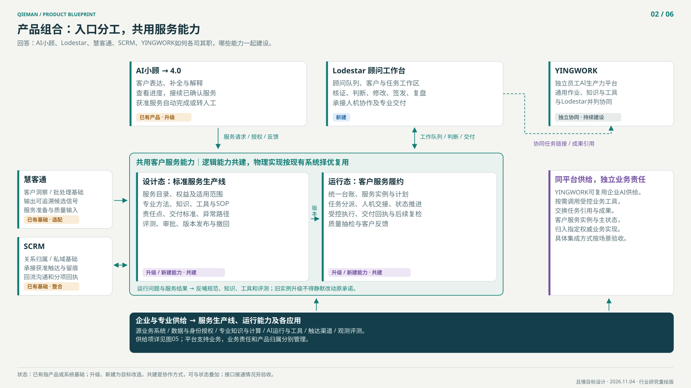

按业务闭环整合
客户服务、私域服务、顾问运营、VIP服务共用客户认知、服务责任、任务和回执；按复杂度与权限选择服务方式。
且慢业务重塑总产品蓝图：连接客户认知、服务方法、顾问行动与AI能力，明确产品升级与共同建设的边界。
事实 · 责任 · 上下文 · 行动 · 回执
YINGWORK：独立AI生产力平台，与Lodestar并列协同。
所有能力按目标架构展示，已上线范围另行验收。
2026-11-04新增宣导总关系图：箭头标明谁向谁提供什么；标签区分已有、升级、新建和共建。

总方案：一个客户服务体系，多个角色产品，业务底座与AI基座分别共建。
客户服务、私域服务、顾问运营、VIP服务共用客户认知、服务责任、任务和回执；按复杂度与权限选择服务方式。
AI小顾服务客户，Lodestar服务顾问，YINGWORK是独立AI生产力平台；三者通过受控能力协同。
慧客通供给洞察，SCRM承接关系与触达，业务底座统一服务对象，AI平台供给运行与治理。
把运营方法沉淀成服务模板、触发规则、事实口径、工具、交接和评测案例，再被小顾4.0复用。
统一服务承诺，按需求复杂度和权益分层
同一业务对象，不同角色视图与权限
业务语义、服务责任与生命周期的唯一契约
以接口与服务等级供给；不把产品名称当作能力已就绪
复用事实源和执行系统；按授权调用
AI推断不覆盖事实，写入与外发按动作授权
目标逻辑分层，非物理部署图。第04层与第05层提供运行能力与事实/执行供给，第03层定义跨入口统一的业务语义；治理贯穿全层。
| 概念 | 判断方式 | 本蓝图中的例子 |
|---|---|---|
| 业务 | 为谁解决什么问题 | 客户咨询、私域陪伴、顾问运营、VIP规划与持续服务 |
| 产品 | 给使用者的完整价值与体验 | AI小顾、Lodestar、YINGWORK、慧客通 |
| 系统 | 保存事实、执行动作的运行载体 | SCRM、客户/账户源系统、任务与服务接口 |
| 项目 | 有范围、负责人和验收的变化 | 智能顾问运营L3、台账与服务包共建、Lodestar首期 |
| 版本 | 某一产品的交付阶段 | AI小顾4.0；不等于新建一套数据和服务后台 |
| 能力 | 跨产品可重复使用的业务或技术供给 | 客户画像、服务编排、模型路由、工具授权 |
| 工作流 | 有状态、条件、异常和责任的过程 | 事件识别→派单→准备→判断→执行→回执 |
| 任务 | 有唯一责任人和完成证据的工作单元 | 补全目标、准备方案、审核材料、回访确认 |
| 分工 | 对能力和结果承担的责任 | 业务定义、产品设计、平台供给、系统实现与质量验收 |
点击产品或项目，查看其输入、输出、独有职责、共用能力与升级方向。
| 项 | 定义 |
|---|---|
| 定位 | 客户侧持续服务入口 |
| 资料边界 | 既有AI陪伴产品；4.0在本蓝图中作为升级目标，不推定已有具体能力。 |
| 输入 | 授权客户上下文、服务实例、可用服务包、专业知识、人工服务进展 |
| 输出 | 有依据的解释、信息补全、服务执行请求、可接续的转人工、服务回执 |
| 独有职责 | 客户对话体验、客户侧服务展示、适用边界、转人工体验 |
| 复用 | 客户台账、服务目录与实例、任务、工具、合规与评测 |
| 升级 | 承接既有问答、记忆与任务的规划方向，重点统一跨AI与真人的服务状态、上下文和持续接续；现有能力逐项复核。 |
| 项 | 定义 |
|---|---|
| 定位 | 把客户状态变成顾问行动的专业工作台 |
| 资料边界 | 新建产品；已有VIP工作台模型与SCRM相关建设可供整合，不等同现成生产系统。 |
| 输入 | 客户与家庭上下文、服务责任、优先任务、洞察、AI准备材料 |
| 输出 | 顾问判断、审核签发、行动指令、服务交付物、修订与反馈 |
| 独有职责 | 今日工作、客户全景、任务处理、规划流程、AI协作、审核与复盘体验 |
| 复用 | 客户主键、台账、服务实例、任务状态、触达与回执、AI运行底座 |
| 升级 | 统一客户页、任务页、规划流程与AI对话的上下文；将SCRM既有页面逐项复用、嵌入或迁移。 |
| 项 | 定义 |
|---|---|
| 定位 | 员工跨业务的AI工作与生产力平台 |
| 资料边界 | 历史材料支持桌面产品与业务应用接入方向；当前可供Lodestar使用的接口和服务等级仍需验证。 |
| 输入 | 员工任务、受权企业知识、工具与业务能力 |
| 输出 | 通用工作成果、跨工具任务、受控业务能力调用 |
| 独有职责 | 通用员工AI体验、个人工作空间、通用任务与工具生态 |
| 复用 | 与Lodestar共用平台能力及受控业务API；可交换任务链接与成果引用 |
| 升级 | 与Lodestar并列；应用集成只是可选接入方式，不形成产品上下级，也不默认承接顾问业务主账。 |
| 项 | 定义 |
|---|---|
| 定位 | 把数据与分析逻辑变成可执行的客户洞察 |
| 资料边界 | 历史资料描述为嵌入SCRM的可配置AI洞察平台，按场景、Agent和调度绑定组织。 |
| 输入 | 获准客户范围、数据快照、洞察逻辑、运行计划 |
| 输出 | 结构化洞察、候选信号、证据与运行记录 |
| 独有职责 | 洞察定义、配置、批量计算、结果追溯 |
| 复用 | 共用客户标识、事实口径、事件规则、质量评测 |
| 升级 | 结果进入统一事件/服务链路；洞察不能直接变成未经确认的客户事实或对客动作。 |
| 项 | 定义 |
|---|---|
| 定位 | 承接客户关系、私域沟通和服务执行 |
| 资料边界 | 历史资料已有客户管理、待办与VIP顾问工作台相关建设；本蓝图不宣称11月全部现状。 |
| 输入 | 客户关系、归属、服务任务、触达指令 |
| 输出 | 沟通记录、触达回执、关系变化、执行结果 |
| 独有职责 | 关系与渠道承接、企微触达、沟通留痕及既有流程 |
| 复用 | 服务实例和任务统一主账；Lodestar可调用其页面与执行能力 |
| 升级 | 先统一主键和状态，再定页面迁移；同一任务仅一个权威完成状态。 |
| 项 | 定义 |
|---|---|
| 定位 | 将可重复运营作业做成持续运行的服务生产线 |
| 资料边界 | 是项目与能力建设路径，不是与小顾、工作台并列的入口。L3达标需按选定边界验收。 |
| 输入 | 服务SOP、真实业务样本、数据口径、工具、异常与质量基线 |
| 输出 | 服务模板、规则、标准工具、准备包、派单与回执、评测样本 |
| 独有职责 | 选定作业闭环的自动运行、异常分流、持续质量与资产沉淀 |
| 复用 | 供Lodestar先使用并验证，再按场景供AI小顾4.0消费 |
| 升级 | 正常内部准备链路自动完成，异常转人工；对客判断另设责任点，不扩大L3自动化承诺。 |
通用AI基座提供运行机制；平台以契约供给身份、数据、工具和知识；客户服务底座定义业务语义；Lodestar组织顾问作业。
模型网关、Agent运行、上下文检索、工具治理、任务恢复、质量评测和运行观测。
企业身份权限、数据API、工具连接、企业知识、部署存储、网络与运维；明确供给方、接口和服务等级。
台账、服务包、事件/任务、授权动作、回执与质量标准。
今日工作、客户全景、规划流程、AI协作、审核签发、交接复盘。
| 供给面 | 历史资料支持的基础 | 本次必须补齐的验证 |
|---|---|---|
| Agent Platform | Skills资产与多种应用接入文档；当时应用闭环验证有限 | Lodestar实际注册、会话/状态、权限、运行恢复与场景评测 |
| STARGATE / OAP / MCP | 工具目录、路由、身份、授权与审计的后台和设计资料 | 目标账号/客户实际可调用范围、动作边界、时延和故障处理 |
| 慧客通 / SCRM / MESN | 洞察配置、关系/服务过程、事件和静默的历史建设 | 统一对象、触发与任务状态、执行回执和跨入口接续 |
| YINGWORK | 历史桌面产品发布与WorkApp接入方向 | 独立并列前提下的可选协同接口；知识、长任务等供给逐项核验 |
| 编号 / 能力 | 候选供给方 | 建设方式 | Lodestar需要什么 | 验收证据 |
|---|---|---|---|---|
| A01 · 模型网关 | 统一AI平台候选供给 | 复用并验证 | 模型选择、流式输出、结构化结果、超时/降级、用量归因 | 同一任务可追踪模型版本；失败可控降级，凭证不进入上下文 |
| A02 · Agent运行与长任务 | Agent平台/运行时团队候选 | 共建缺口 | 执行状态、检查点、暂停/恢复、重试、取消、并发与幂等 | 中断后恢复不重复派单或触达；任务状态持久化 |
| A03 · 上下文与检索 | AI平台供技术；业务底座供客户语义 | 共同建设 | 受权检索、上下文装配、时效检查、来源引用、摘要与记忆 | 不同顾问/客户隔离；过期信息阻断；推断可追溯且可撤回 |
| A04 · 工具接入与治理 | OAP/MCP/业务API团队候选 | 复用并适配 | 工具目录、输入输出契约、用户授权、读写分级、错误码 | 接口存在不等于已授权可用；每项通过真实权限与失败测试 |
| A05 · 业务Skills与知识 | 投研/客服/运营/合规＋平台分发 | 共建资产 | SOP、规则、知识、计算方法、提示模板及依赖版本 | 每项有Owner、来源、版本、适用范围和反例；可回滚 |
| A06 · 人工判断与动作控制 | 业务底座＋渠道执行系统 | 共同建设 | 待审、修改、拒绝、签发、动作授权、撤回与回执 | 审核对象绑定数据/规则版本；数据改变须重新确认 |
| A07 · 质量评测与发布 | AI平台基础设施＋业务质量Owner | 共同建设 | 事实一致、服务正确、越权、异常处理、回归、灰度 | 服务场景有评测集；阻断性错误不过关不能扩量 |
| A08 · 观测、成本与运维 | 平台运维＋业务服务Owner | 复用并补齐 | 全链路ID、延迟、失败告警、成本、运行手册、回滚 | 可从客户服务实例追到工具与模型；故障有人接、可停用 |
| A09 · 企业身份与数据接口 | 身份/数据/各业务域团队 | 复用并约定 | 客户映射、员工归属、服务授权、脱敏、字段级可见性 | 应用身份不能代替客户授权；源系统仍为事实权威 |
| A10 · 通用员工AI能力 | YINGWORK（可选协同方） | 按契约选择 | 知识、通用工具、工作成果或任务链接的协同接口 | 不默认依赖YINGWORK客户端运行；退出集成不损坏顾问服务主账 |
公司身份体系、既有客户和账户接口、SCRM执行、慧客通洞察、MESN/CDP事件与静默规则、专业计算与知识、AI平台的标准接入能力。用可复验的接口确认供给。
统一上下文契约、服务运行包、跨入口任务与回执、客户授权传递、场景评测和异常治理。这些决定多产品能否接续服务。
模型与通用运行能力优先采购或复用；专业服务语义、责任边界和质量标准由且慢持有。现有平台未覆盖的缺口可做薄适配层，避免在Lodestar内再建完整通用平台。
统一的是客户身份、语义、状态、证据和访问契约；物理存储可以分域，事实仍由权威源维护。
| 信息域 | 最小内容 | 权威来源 / 责任 |
|---|---|---|
| 身份与关系 | 客户主键、跨系统映射、顾问归属、经授权家庭关系 | 身份/关系源系统 |
| 客户事实 | 账户、持仓、资金、风险测评、目标与明确偏好 | 账户/交易/测评/客户确认 |
| 服务状态 | 服务权益、有效期、服务实例、责任人、阶段与承诺 | 服务业务底座 |
| 互动与行动 | 沟通、任务、审核、触达、反馈、投诉与交接 | SCRM/工单/任务执行系统 |
| AI推断与缺口 | 潜在需求、置信度、证据、有效期、待确认项 | 洞察与AI输出；独立存储 |
| 证据与治理 | 来源、发生/采集时间、版本、可见范围、修改与撤回记录 | 统一契约＋各事实源 |
面向AI的服务包既包含怎么服务，也包含本次服务所需的可信上下文；不能只是一份客户摘要或提示词。
服务类型、对象、频率、范围、责任边界、权益有效期。服务权益不等于模型调用权限。
触发、适用/排除条件、输入、步骤、工具、人工点、交付物、时限、质量标准和异常路由。
客户/家庭、服务模板版本、目标、责任人、阶段、关联任务、承诺日期、历史交付。
经授权的最小上下文快照、来源与时效、洞察、当前任务、可用动作、风险边界、历史成果和交接信息；引用服务实例，使用前重新校验版本、授权与时效。
| 使用者 | 拿到什么 | 可以做什么 | 必须回写什么 |
|---|---|---|---|
| AI小顾 | 获准客户事实、当前阶段、已确认结论、缺口与可用动作 | 解释、补全信息、调用已授权服务、请求转人工 | 问题、服务请求、执行回执、待确认项 |
| 真人顾问 / Lodestar | 管户范围、优先任务、证据、准备包、服务历史 | 判断、修订、发起专业流程、签发、交接 | 判断依据、审核版本、行动结果与客户反馈 |
| YINGWORK（可选协同） | 按员工授权提供的最小业务上下文或成果引用 | 受控工具调用与通用工作协作 | 成果引用与任务回执，不维护另一份服务主账 |
| 接口类别 | 主要入参 | 主要返回与约束 |
|---|---|---|
| 读取服务上下文 | 客户＋服务实例＋操作者＋用途 | 授权后的事实、缺口、来源、有效时间与版本 |
| 申请或接续服务 | 模板＋客户＋目标＋幂等键 | 服务实例及责任人；重复请求返回既有实例 |
| 领取/推进任务 | 任务＋预期版本＋执行者＋动作 | 状态与执行证据；冲突不覆盖 |
| 提交审核与执行 | 交付物＋数据/规则版本＋授权 | 审核结果/执行ID；高风险动作另行确认 |
| 归集回执与反馈 | 执行ID＋渠道结果＋反馈来源 | 送达/阅读/回复/解决分别记录；生成材料不算服务完成 |
服务标准共用；处理复杂度、权益、响应时限、执行者和专业责任按场景配置。
| 服务场景 | 服务起点 | 工作流 | 责任角色 | 完成证据 |
|---|---|---|---|---|
| 客户咨询 | 识别问题与服务范围 | AI小顾先答/补信息；复杂问题交接 | 小顾/客服 | 是否解决、是否成功转接 |
| 私域陪伴 | 识别适合服务的事件与客群 | 洞察准备→任务→顾问/运营审核→SCRM触达 | 运营/平台顾问 | 触达与反馈，含拒收/静默 |
| 顾问运营 | 持续准备优先服务事项 | L3生产准备包→Lodestar判断→执行与复盘 | 顾问/运营 | 被接受的服务交付与异常处理 |
| VIP服务 | 复杂目标与家庭规划 | 顾问访谈→规划→专家协同→签发→持续复检 | VIP顾问/专家 | 客户确认、目标进展与复检结果 |
任务建议状态：待补信息 → 就绪 → 已分配 → 执行中 → 待审核 → 待执行 / 待回执 → 已验收 → 已关闭；可进入阻塞、拒绝、取消或失败状态。审核通过不等于已执行，渠道送达不等于客户问题已解决。
L3验证可重复的运营作业；小顾4.0消费经过验证的业务资产。依赖按服务场景管理。
| L3必须交付 | 验收什么 | 小顾4.0如何使用 |
|---|---|---|
| 服务目录与SOP | 给出能做/不能做、输入与交付标准 | 小顾按服务范围解释、接续与转人工 |
| 客户事实与缺口口径 | 形成可信上下文和待确认项 | 小顾4.0消费同一客户状态 |
| 信号与触发策略 | 包含静默、去重、优先级和频率限制 | 小顾按策略承接服务；不任意主动打扰 |
| 工具与执行契约 | 统一鉴权、幂等、异常和回执 | 多入口调用同一业务能力 |
| 服务运行包与交接 | 形成结构化准备材料和交接内容 | AI与顾问接棒时不要求客户重复陈述 |
| 评测案例与反馈标签 | 正常/异常/拒绝/过期/越权案例 | 小顾4.0上线门槛与持续回归 |
在授权和规则已明确的内部服务准备链路中，自动完成取数、洞察、材料装配、质量检查、派单、回执归集；正常作业无需逐件人工介入，异常进入有人负责的队列。顾问专业判断是后续独立环节。
相关服务的事实与权限、模板/实例、工具、人工交接和评测都已验收。其他服务可以继续迭代，不把所有L3能力全部完成当成整个4.0唯一的串行前置条件。
L3等级以公司最终口径和已批准的自动化边界评定。本稿不因模型会生成内容、顾问可复制使用，就认定已达到L3。
以下是角色与团队职责建议。团队代号不代表现有组织任命，具体姓名、资源与排期待确认。
| 代号 | 建议责任团队 | 主要职责 | 边界 |
|---|---|---|---|
| T0 | 总蓝图与服务产品Owner | 统筹跨业务服务模型、优先级、分工与验收 | 一个总Owner；姓名待组织确认 |
| T1 | 客户与服务底座团队 | 台账契约、服务目录/实例、事件/任务、回执 | AI小顾与Lodestar共用，不由某个入口私有 |
| T2 | 顾问产品团队 | Lodestar作业体验、顾问判断、规划、协作与签发 | 与SCRM逐页面确定复用/嵌入/迁移 |
| T3 | 客户AI产品团队 | AI小顾4.0的客户体验、服务调用、转人工与持续服务 | 消费业务底座，不复制顾问服务状态 |
| T4 | 运营智能化团队 | L3闭环、慧客通洞察、规则/SOP、样本与质量 | 业务专家与工程共同负责场景结果 |
| T5 | AI与技术平台团队 | 通用模型/运行时/工具/评测/观测/身份供给 | 按能力契约供给，避免绑定某个AI入口 |
| T6 | CRM与渠道团队 | SCRM、关系、企微触达、沟通与执行回执 | 对渠道执行结果负责 |
| T7 | 服务专家与质量团队 | 客服/顾问/VIP/投研/合规的服务标准与质量 | 统一标准，按复杂度设置专业责任 |
| 交付 | A 最终负责 | R 主要实现 | C 必须共同评审 | I 同步对象 |
|---|---|---|---|---|
| 统一对象与服务标准 | T0 | T1 | T2/T3/T4/T6/T7 | T5 |
| AI平台供给契约 | T5 | 各能力供给Owner | T1/T2/T3/T4 | T0/T6/T7 |
| L3场景自动化与质量 | T4 | T4＋相关工程团队 | T1/T5/T6/T7 | T0/T2/T3 |
| Lodestar顾问体验 | T2 | T2 | T1/T4/T5/T6/T7 | T0/T3 |
| AI小顾4.0服务体验 | T3 | T3 | T1/T4/T5/T7 | T0/T2/T6 |
| 渠道执行与回执 | T6 | T6 | T1/T2/T3/T7 | T0/T4/T5 |
| 跨产品上线与范围取舍 | T0 | 各项目Owner | T1–T7及指定质量/合规责任人 | 相关使用团队 |
优先级、责任角色和依赖已拆开，可用于产品团队分工。所有计划均为建议，非已承诺交付日期。
| 编号 / 建设项 | 负责 | 优先级 | 依赖 | 交付物 | 验收标准 |
|---|---|---|---|---|---|
| B01 统一对象与责任边界 | T0 | P0 | 无 | 客户/服务/任务/动作/回执字典，现状系统清单与权威源 | 四类服务Owner会签对象与责任边界 |
| B02 AI平台供给验证 | T5 | P0 | B01 | A01–A10供给清单、接口负责人、时限与缺口 | 鉴权、失败恢复、延迟和质量逐项测试，有替代方案 |
| B03 客户台账最小版本 | T1 | P0 | B01 | 主键映射、授权、事实/推断分离、版本化上下文接口 | 同客户跨入口一致；无权/过期/冲突数据正确处理 |
| B04 服务模板与实例 | T1 | P0 | B01 | 目录、权益、模板、客户实例与运行包契约 | 选定服务可追到责任人、阶段、交付与完成条件 |
| B05 统一事件与任务状态 | T1 | P0 | B03/B04 | 先复核MESN/CDP已有触发与静默；统一去重、派单、状态、超时与回执 | 同一事件不重复派单；跨入口完成状态一致 |
| B06 L3场景与质量基线 | T4 | P0 | B01 | 先选内部服务准备链路，正常/异常清单、人工工时与质量基线 | 业务专家确认自动化范围与验收方法 |
| B07 慧客通洞察适配 | T4 | P1 | B03/B05/B06 | 结构化信号、证据、有效期、运行版本 | 洞察可追溯；不得直接覆盖客户事实 |
| B08 L3服务准备生产线 | T4 | P1 | B02/B04/B05/B07 | 自动取数、准备包、质检、派单、异常分流 | 正常作业无需逐件人工操作，异常进入有责任人的队列 |
| B09 Lodestar首期 | T2 | P1 | B02/B03/B04/B05 | 今日工作、客户全景、任务、AI协作、审核/交接 | 可完成一条真实服务；切换页面保留上下文 |
| B10 SCRM整合与回执 | T6 | P1 | B05/B09 | 页面整合、单一主写切换、历史对账、触达/回执、回滚与旧入口退役条件 | 切换对账通过；重复/失败/延迟不误标完成，达到条件再退役旧入口 |
| B11 专业工具与知识资产 | T7 | P1 | B02/B06 | 优先服务Skills、数据/计算工具、证据与规则版本 | 方法/边界可审阅；案例集过质量门槛 |
| B12 小顾4.0服务接续 | T3 | P1 | B03/B04/B05/B08对应场景/B11 | 服务识别、上下文读取、接续、补信息、转人工与服务展示 | 同一服务可从AI转顾问再回AI，权限与状态一致 |
| B13 端到端评测与灰度 | T0；T5执行 | P1 | B08/B09/B10/B12 | 服务Owner负责业务质量；T5供评测设施、灰度/回滚与故障预案 | 质量不低于基线；阻断问题修复后才扩量 |
| B14 YINGWORK并列协同 | T5 | P2 | B02/B04 | 受控业务工具、任务/成果引用与可选集成 | 两产品独立运行；没有集成也不丢服务状态 |
| B15 VIP与多服务扩展 | T2 | P2 | B13 | 家庭/目标、多角色专家协作、服务权益扩展 | 家庭授权隔离；服务重叠与责任冲突可识别 |
| B16 运营与产品包装 | T0 | P1 | B09/B12/B13 | 内部分工说明、产品演示、可对外能力清单 | 规划/试点/已发布/效果证据四种口径分别标明 |
一个最小服务场景、同一份对象模型、平台供给验证与基线
L3准备包→Lodestar判断→SCRM执行→回执，先完成闭环
按场景消费已验收资产；全链路评测、灰度和回滚
L3持续运行与业务质量稳定后，扩展VIP/更多服务和YINGWORK协同
阶段可并行，时间在业务范围和平台供给核验后重估。连续运行观察窗从稳定试点启动计算，不与开发周数机械相加。
| 指标 | 口径 | 注意事项 |
|---|---|---|
| 服务连续性 | 跨入口接续成功的服务数 / 需要接续的服务数 | 同一服务实例去重；须附有效上下文与责任人 |
| L3自动承接 | 冻结范围内无人工介入且合格交付的运行数 / 该范围全部运行数 | 边界预先冻结；异常、失败、超时和人工兜底均保留分母并单列；范围外请求另记 |
| 服务质量 | 专家抽检合格率、事实错误率、越权/错误外发次数 | 先建人工基线；阻断错误未清零不扩量 |
| 真实效率 | 每件合格交付的人工分钟与全成本 | 包含复核、修订、异常和返工；与基线同口径比较 |
| 闭环完成 | 达到约定完成条件的实例 / 到期实例 | 送达、阅读、回复、问题解决分开，不以生成量代替 |
| 客户体验与经营 | 重复陈述、响应时间、投诉；留存/资产等后续指标 | 经营结果另做对照与归因，不把时间相关当因果 |
对内解释系统、能力和责任；对外解释客户与顾问获得什么。所有目标能力按规划口径表述。
且慢拟以统一客户认知和服务体系，连接AI陪伴、真人顾问与持续运营。AI小顾帮助客户获得及时、可接续的服务；Lodestar帮助顾问理解客户、处理重点任务并交付专业服务；服务方法和专业能力在共同底座上持续沉淀。
| 对象 | 可直接使用的规划定位 |
|---|---|
| AI小顾4.0 | 面向客户的持续服务伙伴：理解已授权的客户状态、接续服务进展，并与真人顾问协同。 |
| Lodestar | 面向顾问的专业工作台：将客户全景、重点任务、规划流程与AI协作组织成连续的工作体验。 |
| 智能顾问运营L3 | 持续生产服务准备与运营行动的能力建设项目：将专家方法转化为可运行、可评价、可复用的服务资产。 |
| 统一客户台账与服务包 | AI与真人服务共用的客户认知、服务责任和执行上下文。 |
| 慧客通 / SCRM | 分别提供客户洞察与客户关系/触达承接，向共同服务闭环提供能力。 |
| YINGWORK | 独立AI生产力平台，与Lodestar通过通用AI能力、业务工具和任务成果协同。 |
本页公开呈现规划抽象，不包含客户数据、内部附件正文、人员联系方式、内部访问入口或密钥。
| 依据类别 | 本稿采用内容 | 能证明什么 |
|---|---|---|
| 用户本次明确 | 新建Lodestar、升级小顾4.0、L3作为关键前提、打通四类服务、共用台账/服务包；YINGWORK独立并列 | 已明确的产品方向；不等同研发交付或组织承诺 |
| 既有资料（2026年7–10月） | SCRM/慧客通、YingWork阶段汇报、VIP工作台模型、L3方法、Agent平台与OAP规划 | 历史定位、设计与阶段记录；未逐项复验2026-11-03生产状态 |
| 本次方案建议 | 六层架构、服务包四对象、A01–A10、T0–T7、B01–B16、接口与验收 | 用于决策与团队讨论的目标模型；不是现状陈述 |
| 尚需确认 | 当前平台接口与服务等级、任务主账部署、Owner姓名、资源排期、首个L3作业边界 | 在正式立项与对外发布能力承诺前补齐 |
先选定权威源，再决定物理部署；禁止双向覆盖和双主写。
建议内部服务准备包及派单闭环；自动对客服务另行定边界。
逐页面列复用、嵌入、迁移、保留；先保主键与任务状态一致。
A01–A10由平台Owner给出接口、版本、服务等级和可复验结果。
每个服务模板和实例一个最终责任人，AI和平台不能替代业务责任。
相关历史公开材料可辅助理解产品方法，不作为现状完成证明：顾问工作台L3项目提报（历史方案）。原始资料路径、引用位置和核验说明保留于本次交付的本地证据附件，未上传公开仓库。